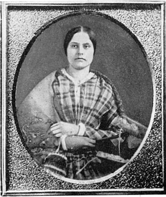

정치 분야 위인

수전 B. 앤서니 (Susan B. Anthony)
- 분야
- 정치
- 출생 및
사망 - 출생 > 1820년 2월 15일
사망 > 1906년 3월 13일 - 업적 요약
- 여성 참정권 등을 주장하며 미국 대통령 선거일에 여성으로 투표를 강행했고, "여성도 사람입니까?" 라는 명연설을 하였다.
- 업적 상세
-
앤서니는 미국에서 남북 전쟁이 발발하자, 뉴욕에서 노예제 반대, 금주운동 등으로 뛰어난 활약을 펼쳤다.
1856년에는 '미국 노예제 반대 협회'의 뉴욕 대의원으로 선출됐다.
1854년 이후, 앤서니는 유일하게 여성의 성적 욕망 향상을 위한 운동에 전력을 다했고, 여성을 위한 권리쟁취를 위해 일하는 열렬한 운동가, 달변의 거리 연설가, 저술가로 알려지게 된다.
앤서니는 낙태를 강력하게 반대했고, 그것을 여성이 남성에게 종속된 증거로 보았다.
1868년 앤서니가 발간한 신문의 모토는 다음과 같은 것이었다.
"진정한 공화국이란, 남자들에겐 그들의 권리를 그리고 그 이상도 아닌, 여자들에게도 그들의 권리를 주어야 합니다."
1872년 11월 5일 실시된 대통령 선거의 투표에 참여하기 위해 앤서니는 '미국 헌법 수정 제 15조'를 제시했다.
그는 투표참여를 강행했고, 11월 18일 소환장을 받았다.
100 달러의 벌금형을 부과받게 되었으나 그는 지불을 거부했다.
재판에서는 마틸다 조슬린 게이지가 변호를 맡았으며, 심판은 앤서니가 아니라 오히려 미국이 받아야 함을 호소했다.
앤서니는 동료 3명과 함께 '여성 참정권사'를 발간했다.